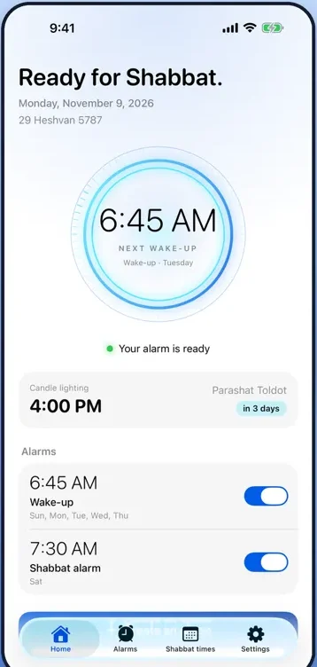
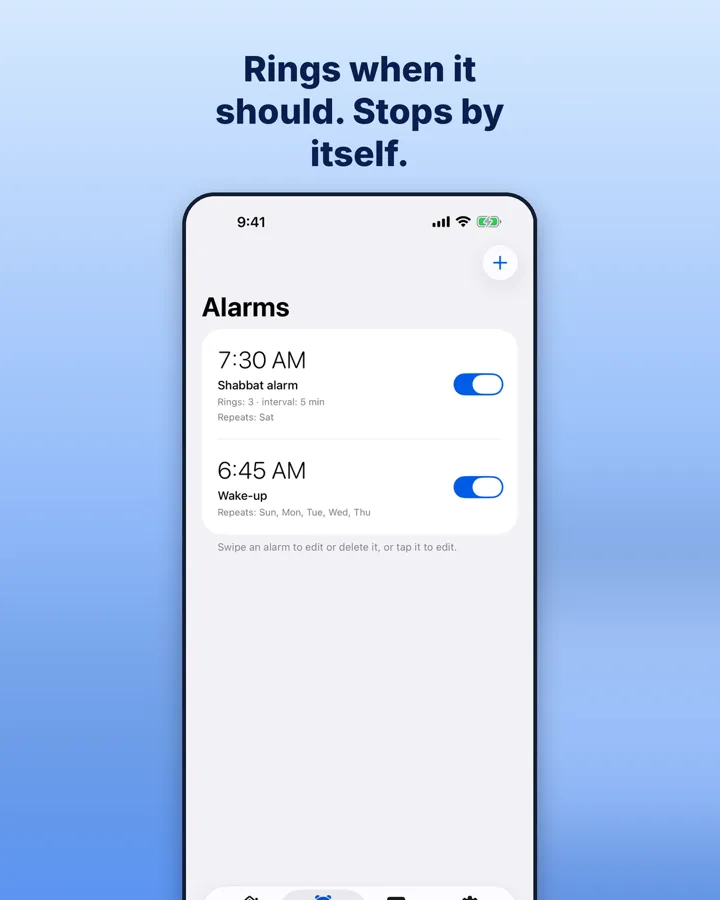

Shabbat Waker
An alarm clock that knows Shabbat. Regular alarms that ring even when your iPhone is on silent, and a gentle Shabbat alarm that stops by itself.
 Scan to download
Scan to download
A quick look





Who uses Shabbat Waker
Early risers
Regular alarms that ring even when your iPhone is on silent, so you never miss the morning.
Shabbat observers
A gentle Shabbat alarm that stops by itself after a few seconds, with no need to touch the phone.
Anyone who wants exact times
Candle lighting and havdalah for where you are, along with the weekly portion and the holidays.
Good to know
Alarms that ring
Regular alarms are system alarms, so they ring even when your iPhone is on silent.
The Shabbat alarm
On Shabbat the alarm is a plain system notification. It stops by itself after 10 to 50 seconds, with no need to touch the phone.
Times for your location
Candle lighting and havdalah for where you are, along with the weekly portion and the holidays.
All over your iPhone
Home Screen and Lock Screen widgets, Apple Watch and Siri.
Privacy
Only your precise location is sent to Hebcal to calculate the times. No account, no ads, no tracking.
Five languages
Hebrew, English, French, Russian and Spanish.
Upfront
Free, with an optional Pro
Downloading the app and its core are free: alarms, candle lighting and Shabbat end times, and widgets. There is also an optional Pro upgrade. Nothing in it is required.
Privacy
No account, no ads, no tracking. To work out the times, only your exact location is sent to the Hebcal service.
Five languages
Hebrew, English, French, Russian and Spanish.
From the Beit El community
Built in the Beit El community, and kept simple and focused.
Common questions
Does the alarm ring when my iPhone is on silent?
Yes. Regular alarms are system alarms, so they ring even on silent.
What happens on Shabbat?
On Shabbat the alarm is a plain system notification. It stops by itself after 10 to 50 seconds, with no need to touch the phone.
What data is sent, and to whom?
To work out the times, only your exact location is sent to the Hebcal service. There is no account, no ads and no tracking. Full details are in the privacy policy.
Is the app free?
Yes. Downloading it and its core are free, and there is an optional Pro upgrade with extras. You can use the app exactly as it is.
Where does it work?
On iPhone, with Home Screen and Lock Screen widgets, Apple Watch and Siri.